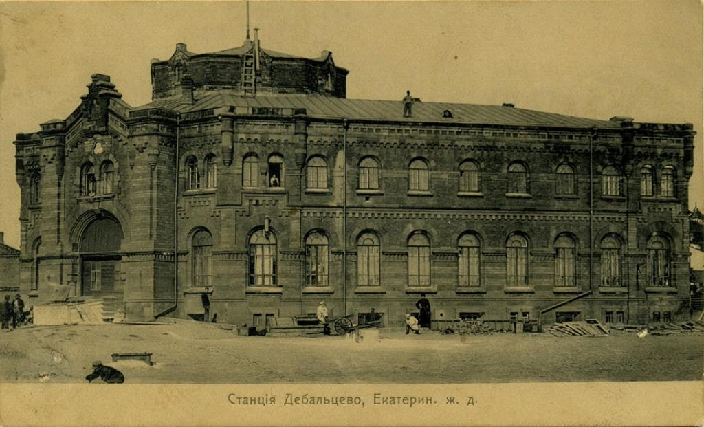
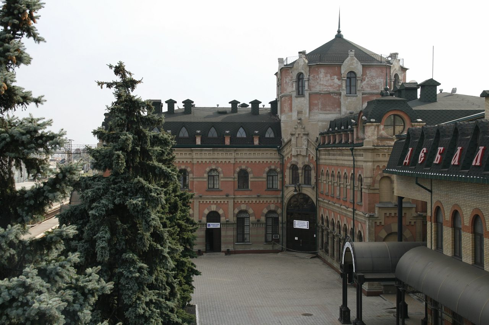

Город воинской славы

Воклаз города Дебальцево
Одной из самых первых станционных построек Дебальцева, воздвигнутых в конце XIX века и сохранившихся до наших дней, является здание железнодорожного вокзала, ставшее символом города. Здание строилось по индивидуальному проекту. Оно отличается оригинальностью конструкции и неповторимостью архитектурных форм.
С самого начала на том месте, где сейчас находится бытовой корпус Локомотивного пассажирского депо, было построено деревянное полутораэтажное здание вокзала Дебальцева. Строительство основной части нынешнего вокзала, за исключением постройки кассового зала, длилось около 14 лет — с 1879 по 1893 год. Возводили здание сотни рабочих, пользуясь примитивными инструментами.
В одном из залов Дворца культуры железнодорожников был выставлен на всеобщее обозрение макет, отображавший строительство здания вокзала. К сожалению, до наших дней он не сохранился. В результате несчастного случая, произошедшего во время строительства, погиб один из руководителей стройки. В его честь возле здания вокзала был сооружён монумент, разрушенный во время Великой Отечественной войны.
Стены вокзала являются немыми свидетелями исторических событий, происходивших в городе Дебальцево со дня его основания и до наших дней. Оно является как бы отражением истории Донбасса в миниатюре, и, если считать архитектуру застывшей музыкой, то здание вокзала является гимном советскому народу,  сумевшему в исторически короткий срок, за какие-то два-три десятилетия конца XIX — начала XX века преобразить унылую полупустынную степь в цветущий промышленный край, являвшийся, по выражению Владимира Ленина, «становым хребтом социалистической экономики, без которого строительство социалистического государства и его превращение в одну из мощнейших держав мира было бы пустым звуком».
В путеводителе «Спутник пассажира», изданном сто с лишним лет назад коммерческим агентом Юго-Восточных дорог А. И. Радзевским, сказано: «Дебальцево — громадное здание пассажирского вокзала красиво и резко выделяется среди пустынной степной местности. Большой зал 1 и 2 классов и отдельно для пассажиров 3 и 4 классов. Прекрасный буфет со всякого рода яствами и напитками, содержимый касимовскими татарами — один из лучших на линии Юго-Восточных дорог».
Станция Дебальцево служит узловым пунктом для дорог Донецкого каменно-угольного района: сюда сходятся поезда из Харькова через Купянск и Лисичанск и через Никитовку и Хацапетовку, из Ростова-на-Дону — через Зверево. Из Москвы через Миллерово — Луганск. Из Таганрога — через Харцызск, из Мариуполя через Ясиноватую. Пассажирская сутолока на станции не прекращается ни на минуту.
В 1887 году на вокзале станции Дебальцево побывал Антон Павлович Чехов. Здание вокзала представилось его взору островком в бескрайней степи. Но уже тогда ст. Дебальцево заявила о себе в Донецком крае, так как находилась на перекрёстке путей сообщения. Стальные артерии Донецкого края, пересекающиеся в Дебальцеве, стремительно меняли жизнь Российской империи. Они и положили начало городу Дебальцево.
В письме родным А. П. Чехов изобразил небольшую схему, в центре которой нарисовал большой кружок. А от него в шести направлениях изобразил ветки, которые расходились в разных направлениях. «Центральный шарик, — писал А. П. Чехов — это станция Дебальцево. Остальные шарики — это Бахмуты, Лисичански, Лугански и пр.». Стены этого здания помнят огни первой революции, гражданскую войну, новаторство тридцатых, немецко-фашистских оккупантов. В 1936 году к зданию вокзала была сооружена пристройка — кассовый зал.
В годы Великой Отечественной войны здание было сильно разрушено. За 1946—1953 годы восстановлено и введено в эксплуатацию частями. В таком состоянии он дошёл до наших лет. Вокзал станции Дебальцево — I класса островного типа. Двухэтажное здание общей площадью 2355,36 квадратных метров. Имеет 30 помещений. Мемориальные доски на фасаде здания говорят о том, что 1 декабря 1878 года Дебальцевский железнодорожный узел вступил в строй; о том, что 16 декабря 1905 года боевые дружины железнодорожников отправились на помощь вооруженному Горловскому восстанию; о расстреле калединцами 2 декабря 1917 года командира красногвардейского отряда Коняева. В кассовом зале мемориальная доска говорит о том, что здесь, в стенах этого здания, родился метод компостирования билетов в поездах.
Достопримечательности
- - Вагонное депо.
- - Дом науки и техники вагонного депо (ул. Калинина).
- - ДКЖД (Дворец Культуры Железнодорожников).
- - Спортивный комплекс «Локомотив».
- - Городской центр культуры и отдыха (ул. Заводская).
- - Клуб «Строитель» (ул. Космонавтов).
- - Дом культуры (посёлок городского типа Мироновский, ул. Ленина).
- - Железнодорожный вокзал (памятник архитектуры XIX века).
- - Памятник воинам-интернационалистам (ул. Советская).
- - Памятник воинам-освободителям от немецко-фашистских захватчиков (Центральная площадь).
- - Памятник героям, погибшим в Великой Отечественной войне (пос. Заводской).
- - Памятник героине Гражданской войны Л. Г. Мокиевской-Зубок, командиру бронепоезда № 3 «Власть Советам!»